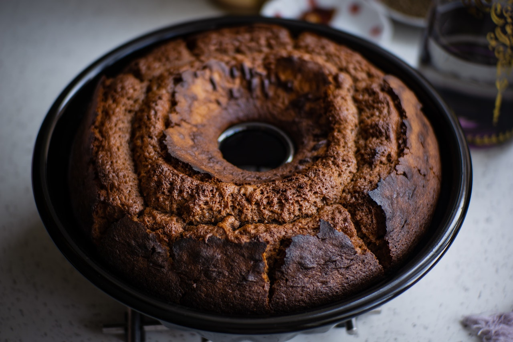

Receita de bolo de chocolate simples.
Ingredientes
- 3 ovos
- 2 xícaras de chá de açúcar
- 2 colheres de sopa de margarina
- 1 xícara de chá de leite
- 3 xícaras de chá de farinha de trigo
- 1 xícara de chá de achocolatado em pó
- 2 colheres de chá de fermento em pó
Modo de Preparo
- Pré-aqueça o forno a 180ºC.
- Bata das claras em neve.
- Adicione as gemas e o açúcar e bata novamente.
- Adicione em um copo reservado a margarina e o leite e esquente por 30 segundos no microondas.
- Adicione a margarina e o leite e bata novamente.
- Adicione a farinha e o achocolatado e misture suavemente com uma espátula.
- Adicione o fermento e misture suavemente.
- Coloque em uma assadeira untada e deixe no forno por 50 minutos.
Informações Adicionais
Este bolo é perfeito para um café da tarde com a família!